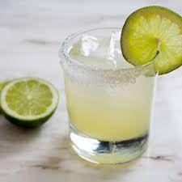

Beloved by women of all backgrounds and men who aren't afraid to order one, the margarita is a citrusy latin classic that should be more tequila than anything else!
To make a margarita, you'll need the following ingredients:
- 2 (read: 4) ounces blanco tequila
- 1/2 ounce orange liquer
- 1 ounce lime juice, ideally fresh
- 1/2 ounce agave syrup
- Garnish: lime wheel and salt or sugar rim
- Paper towels or pour over your own open mouth since you bought the pricey tequila for your questionable racially themed party.
Back to homepage